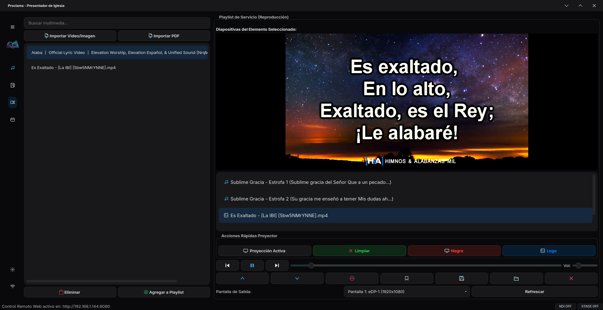

Proclama es el presentador multimedia definitivo diseñado específicamente para iglesias modernas. Doble pantalla sincronizada, control remoto web, búsqueda predictiva de escrituras y transiciones fluidas sin complicaciones.

Una interfaz de alto rendimiento que elimina las distracciones y permite centrarse en lo que verdaderamente importa: guiar a la congregación.
Consola del operador independiente de la ventana de proyección. Muestra previsualizaciones en tiempo real, posición de reproducción de video y volumen sincronizado de forma bidireccional.
Búsqueda inteligente al vuelo presionando Ctrl + F. Encuentra cantos o escrituras por coincidencia parcial de versículos en menos de 100ms y proyéctalos directamente con un solo enter.
Servidor integrado con una consola web optimizada (Glassmorphic) en tu celular o tablet. La playlist se sincroniza bidireccionalmente en tiempo real, y los botones multimedia reaccionan al contenido activo de forma inteligente.
Carga partituras, anuncios o diapositivas desde archivos PDF nativamente. Proclama divide automáticamente el documento en diapositivas individuales y las coloca directamente en la escaleta.
Configura fuentes, tamaños y colores. Además, activa el modo croma con fondo verde puro y subtítulos alineados al tercio inferior (Lower Thirds) ideales para transmisiones en vivo.
Genera archivos portables .proclamabackup que empaquetan la base de datos (canciones, biblias) y configuraciones en un solo clic, permitiendo migrar o respaldar todo de forma segura.
Salida de alto contraste dedicada para los músicos y oradores. Muestra la hora local, la letra de la diapositiva actual y una previsualización de la siguiente diapositiva.
Transmite la señal de proyección limpia o con fondo de Chroma Key directamente a la red local. Captura el stream en OBS Studio o vMix con latencia inferior a 100ms y sin capturadoras físicas.
Un entorno premium totalmente rediseñado con temas oscuros profundos, colores de acento unificados, sutiles sombras (drop shadows) y una barra de acciones rápidas tintada para operar sin estrés bajo presión.
Libérate de los cables en la mesa de sonido. Proclama integra un servidor local que sirve un panel de control interactivo responsivo de diseño moderno.
Ahora con el panel de acceso rápido QR Remoto en la barra de herramientas, puedes generar de forma local y 100% offline un código QR para escanear y conectarte al instante con tu smartphone.
Proclama está optimizado para funcionar con un consumo mínimo de recursos, garantizando estabilidad durante las presentaciones en vivo.
Elige la opción que mejor se adapte al tamaño y necesidades de tu congregación.
Prueba Proclama sin límites y experimenta toda su potencia.
Uso ilimitado y permanente para la computadora de tu iglesia.